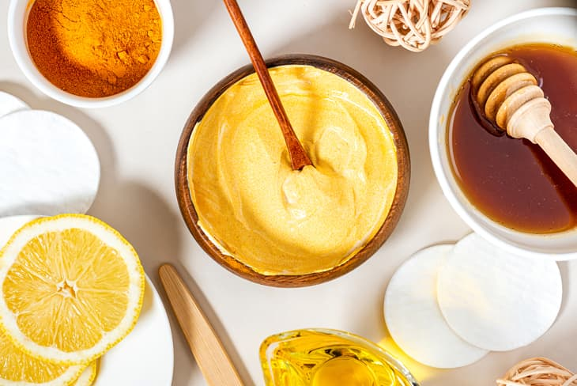

Radhika's Ramblings
Contact me!
Favorite Artist
I've never had good answer for “favorites.” Color, animal, season, and especially song artist. I love music, but being born in the age of Pandora and Spotify, I'm not used to listening to a specific artist or album. Oftentimes I click around and create playlists based on what I like. I discovered Hozier when my sister played it in the car. His genre is alternative/indie with inspiration from folk, soul, and blues. He also has a wide vocal range creating more versatile songs. The aspect that I think is most unique, however, is that Hozier writes his music as poetry. In Genius’ “Verified” series, artists explain how and why they wrote lyrics for different songs. Unlike other artists who first sing (without vocal or instrumental backing) the lyrics, Hozier
reads them.
One would assume it sounds unappealing in a flat voice, but he keeps to the rhythm and cadence. I gained a new appreciation for this style of writing and started to listen to every one of his songs. My favorite albums are currently Hozier, Wasteland, Baby! and Unreal Unearth.
Dance Journey
I began dancing with my sister and family friends. Once we moved, my mom put us both in bharatanatyam lessons. My sister chose the swim team over dance, but I continued to learn and even got the chance to perform at big community events. When the pandemic hit we were forced to do lessons over video call which caused me to I lose interest in practicing. After about a year, I convinced myself to quit and focus on other parts of my life.
 In high school I searched for clubs that peaked my interest, and my best friend pointed out Hip Hop Club. We joined together and are still in it today! I soon saw another opportunity at CCA: dance P.E. Each class has a piece in the all
Envision
dance show at the end of the semester. In dance II, Mrs. J selected me as the “lead dancer.” She also encouraged me to take dance III (intermediate) which is combined with advanced. I was honestly scared because I could see all the conservatory members next to me in the mirror, but with time I gained confidence in my ability to adapt. I began to see my passion for dance in any style and became president of Indian Dance Club. We taught a dance P.E. masterclass and I realized how far I'd come as a freshman with little Western experience. By now, I’ve learned some contemporary, hip hop, ballet, a little jazz, but most importantly I’ve learned about my own body. I learned to value all it can do and am excited to see where it takes me next.
In high school I searched for clubs that peaked my interest, and my best friend pointed out Hip Hop Club. We joined together and are still in it today! I soon saw another opportunity at CCA: dance P.E. Each class has a piece in the all
Envision
dance show at the end of the semester. In dance II, Mrs. J selected me as the “lead dancer.” She also encouraged me to take dance III (intermediate) which is combined with advanced. I was honestly scared because I could see all the conservatory members next to me in the mirror, but with time I gained confidence in my ability to adapt. I began to see my passion for dance in any style and became president of Indian Dance Club. We taught a dance P.E. masterclass and I realized how far I'd come as a freshman with little Western experience. By now, I’ve learned some contemporary, hip hop, ballet, a little jazz, but most importantly I’ve learned about my own body. I learned to value all it can do and am excited to see where it takes me next.
Skin/Haircare Routine
Since I was young I've had acne, but because I didn't know how to take care of it, it led to hyperpigmentation and scarring. Through some trial and error, I've found a simple routine that has helped me improve these issues. My family tries to use all safe and organic products. Some brands I like are:
CeraVe,
Origins, and
Biotique.
My morning skincare is usually short. If I have inflammation I apply a cooling calamine lotion. At night I use a serum instead of sunscreen to prevent oiliness during the day.
- cleanser
- toner
- moisturizer
- sunscreen
When I have time, I like to mix a face mask using natural ingredients such as:

- yogurt
- aloe vera
- kasturi manjal
- gram flour
- neem powder
- brahmi powder
- honey
- multani mitti
These all help with evening out the skintone and giving a natural glow. I only wash my hair once a week to keep my scalp from becoming too dry. Since I have curly hair, I use a simple shampoo and conditioner and detangle in the shower. I've also tried an apple cider vinegar rinse; this removes buildup making your hair feel extra clean. Afterwards I scrunch in leave-in conditioner, styling spray (from
Curlsmith),
and hair serum.